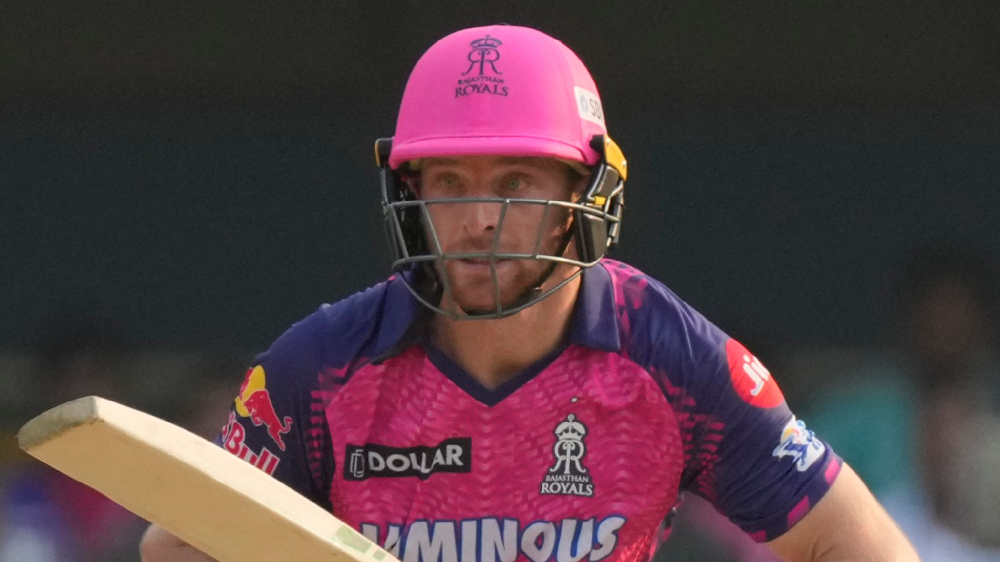
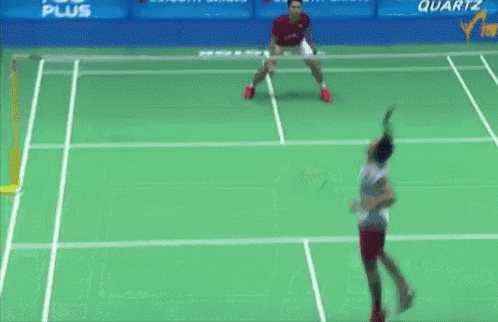

Buttler's 107* tops Narine's 109 as Royals ace record chase against
KKR
Royals shows the equlled for the record for the highest successfull
run chase in IPL history.

Jose butler hitting six against KKR.
IPL 2024 KKR vs RR Highlights: Jos Buttler almost
single-handedly led Rajasthan Royals to a record-equalling chase of
224 against the Kolkata Knight Riders with an unbeaten
107 off 60 balls. Buttler battled cramps in the last over to
knock off the winning runs and RR equalled the record for highest
succesfull run chase in the IPL, which they themselves had set last
year. The England captain started the last over with a six off the
first ball, he then had to turn down runs off the next four balls,
thus bringing the equation down to RR needing three runs to win off
the last two balls. Buttler then hobbled two runs off the second last
ball of the match and took a single off the last and thus took RR to a
record-equalling chase.
Japan's former world No. 1 Momota Kento to retire from international
badminton
The two-time world champion announces his last duty for the national
team will be the 27 April-5 May Thomas & Uber Cup Finals in Chengdu,
People's Republic of China.

Badminton's former world No. 1 Momota Kento announced his
international retirement on Thursday at a press conference in Tokyo
(18 April).
Momota, 29, said his last tournament for the Japan national team will
be the 27 April-5 May Thomas & Uber Cup Finals in Chengdu, People's
Republic of China. The two-time world champion is ranked 52nd overall
in the qualifying race for the Paris 2024 Olympic Games - seventh from
Japan. Only the top two from a National Olympic Committee qualify for
the Games. In 2019, Momota won a record 11 titles on the BWF Tour and
was named the top men's player. But the following year in January, he
was part of a fatal car crash in Kuala Lumpur that nearly killed him.
Momota made his return to competition in December, but has not been
the same since. The Kagawa Prefecture native failed to get out of the
group at his home Games in Tokyo, and has just two tour wins since the
career-altering accident.